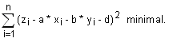
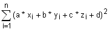

Lineare multiple Regression und Korrelation
Geben Sie die Koordinaten ( xi / yi / zi) von maximal 30 Punkten in die Felder ein.
Das Formular berechnet dann nach Klick auf 'Regression berechnen' die Koeffizienten a, b und d in der Gleichung der
Regressionsebene E: z = a*x + b*y + d auf zwei Arten:
1. Die Summe der Quadrate der z-Differenzen wird minimal, d.h.
 ( 3 ≤ n ≤ 30)
2. Die Summe der Quadrate der Abstände der Punkte wird minimal, d.h.

minimal unter der
Bedingung a2 + b2 + c2 = 1 ( 5 ≤ n ≤ 30)
01 02
03 04
05 06
07 08
09 10
11 12
13 14
15 16
17 18
19 20
21 22
23 24
25 26
27 28
29 30
Resultate der multiplen Regression für n =
Mittelwerte: x = , y = , z =
1. Summe der Quadrate der z-Differenzen minimal
Summe der Quadrate der z-Differenzen =
Bestimmtheitsmass R2 =
Je näher R2 bei 1, desto besser die Korrelation.
(Summe der Quadrate der Abstände der Punkte = )
2. Summe der Quadrate der Abstände der Punkte minimal
Summe der Quadrate der Abstände der Punkte =
(Summe der Quadrate der z-Differenzen = )